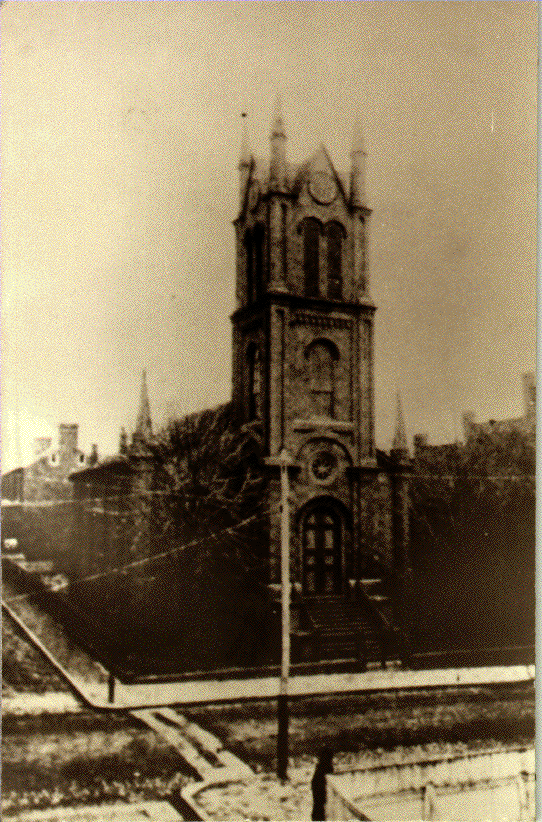

Old Lutheran Church
Staunton, Virginia

Click on the red ball to return to the main Archive, from which you can continue your search, begin a new search, or exit the Archive.
 Click
on the red ball to return to the main Archive, from which you can
continue your search, begin a new search, or exit the Archive.
Click
on the red ball to return to the main Archive, from which you can
continue your search, begin a new search, or exit the Archive.